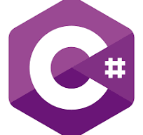

Programming Languages

Programming languages are used by programmers to write a set of instructions for a computer to carry out. However, there are multiple different programming languages which are used dependent on the program that the programmer is writing. This webpage will break down the pros and cons of a selection of the programming languages out there and discuss the situations where each should be used.
Python
Python was created in 1991 by Guido van Rossum and is commonly the first language most people learn. This is due to being created using an English syntax making it resemble something that the programmer is already used to, making it far more accessible then most other programming languages. It is using an interpreter unlike the C languages and Java meaning that the programmer can immediately check that the line of code works as expected. It also has a very large community due to it being an easier language to learn meaning that there are tonnes of resources out there to help people learn. Python does come with some problems though. Due to being an interpreted it is incredibly slow compared to languages using a compiler. It also takes up a large amount of memory, in some cases using as much as ten times as much RAM as the same program wrote in a different language. Python is also dynamically typed, meaning that data types are determined when the program runs instead of when it compiles. This makes the program less secure then languages like C++ or Java. It becomes even less secure due to it being a popular target for hackers due to its popularity and ease of use. Python is used in a variety of different fields including data science and web development but is mainly used as a jumping off point to learn other languages.
C++
C++ was created in 1979 by Bjarne Stroustrup and is one of the most powerful languages in the world. It is once again used in a wide variety of industries including VR, Game Development and Robotics. C++ has a large focus on object-oriented programming allowing for the programmer to create classes and treat their data as objects. Unlike Python C++ uses a compiler making it a much faster and is widely regarded as one of the most efficient and powerful programming languages out there. On the other hand, similar to Python C++ is still a high-level language meaning that it is not too difficult to learn, especially if you have already learnt another language. Finally, it features multiple features that allow for C++ to have very powerful control over memory management and data safety. C++ does however come with a series of negatives. Despite being easy to gain a basic understanding of, it can still be difficult to learn C++ due to the complexity of some programs. Certain features can be very hard for new programmers to get a grasp of including pointers, templates, lambdas with some of these features leading to potentially catastrophic failures. For example, an uninitialized pointer can result in a serious system failure that could crash your device. Errors are also difficult to understand in C++ due to not simply explaining the error like Python and instead giving you a line number and an error code for you to look up. C++ can also include platform specific features meaning that it has features that would only run on a Windows-based OS. This can make your programs less accessible which can prove difficult.

C#
C# is a much newer programming language being created in 2000 by the Microsoft developer Anders Hejlsberg. It is Microsoft’s most popular programming language being used commonly for game development. C# shares most its advantages and disadvantages with C++ due to both being derived from the C family. They do however have some differences, C# has automatic garbage collection whereas in C++ you have to manually pay attention to it. C# is exclusive to windows without the use of Microsoft’s .Net tool whereas a majority of C++ can be used across any OS. Due to these reasons C# is commonly used instead of C++ however C++ does still have its place.
Java
Finally, Java is another good language for people learning programming. Java was created in 1995 by James Gosling and is mainly used in software development and large systems development. Java is one of the easiest programming languages to use and does not feature the same complex features as C++/C# while still including object-oriented programming language. Java is also independent of any platform due to using the Java Virtual Machine (JVM) allowing programs to be ran on any system that has Java installed. Despite being a compiled language like C++/C# it can still be on the slower side due to its virtual machine so choosing Java could come down to versatility vs speed argument. Java also requires a commercial license in order to be used which a business would have to consider when deciding whether Java is the right language for them. The final negative of Java is that it can be quite difficult to create a GUI with Java due to inconsistencies especially if the GUI you want to create is complex. This makes it less suitable for desktop applications with other languages offering far superior tools for this task.